A powerful feature of gfwr is the ability to get data
for making custom maps of human activity at sea, such as apparent
fishing effort, at-sea transshipment, and port visits. The
get_raster() function provides gridded (e.g. raster) data
from GFW’s 4Wings
Map Visualization API and is useful for making heatmaps, while the
get_event() function supplies vector data (mostly point
locations) from the GFW Events
API for individual vessel events.
This vignette demonstrates how to use and combine multiple
gfwrfunctions to make a variety of maps of fishing vessel activity. Specifically, this vignette will show how to use theget_raster()function to make heatmaps of apparent fishing effort, and theget_event()function to visualize the locations of specific events. It will demonstrate how to request data for specific regions usinggfwr’s built-in options, as well as how to use a custom region provided by the user.
To get started, first load the gfwr package.
#> ℹ Loading gfwrNext, load your API key into your environment with the
gfw_auth() function (see the Authorization
section of the gfwr README)
gfw_key <- gfw_auth()For this vignette, we’ll also use some tidyverse
packages for data wrangling and plotting, as well as sf for
creating and manipulating spatial data and rnaturalearth to
add reference data to our maps.
library(dplyr)
library(tidyr)
library(sf)
library(rnaturalearth)
library(rnaturalearthdata)
library(glue)
library(ggplot2)To make our maps a little nicer, let’s define a custom
ggplot2 theme and a color palette for our heatmaps of
apparent fishing effort.
# Map theme with dark background
map_theme <- ggplot2::theme_minimal() +
ggplot2::theme(
panel.border = element_blank(),
legend.position = "bottom", legend.box = "vertical",
legend.key.height = unit(3, "mm"),
legend.key.width = unit(20, "mm"),
legend.text = element_text(color = "#848b9b", size = 8),
legend.title = element_text(face = "bold", color = "#363c4c", size = 8, hjust = 0.5),
plot.title = element_text(face = "bold", color = "#363c4c", size = 10),
plot.subtitle = element_text(color = "#363c4c", size = 10),
axis.title = element_blank(),
axis.text = element_text(color = "#848b9b", size = 6)
)
# Palette for fishing activity
map_effort_light <- c("#ffffff", "#eeff00", "#3b9088","#0c276c")We’ll also define a common date range to use for querying data.
start_date <- '2021-01-01'
end_date <- '2021-03-31'get_raster()
The gfwr function get_raster() provides
aggregated gridded (e.g. raster) data for AIS-based apparent fishing
effort. It was designed to provide data for a specific region, offering
users the ability to select from multiple built-in region types by
specifying a specific Exclusive Economic Zone (EEZ), Marine Protected
Area (MPA), or Regional Fisheries Management Organization (RFMO).
The list of available regions for each type, and their
label and id, can be accessed with the
get_regions() function.
eez_regions <- get_regions(region_source = 'EEZ', key = gfw_key)
eez_regions
#> # A tibble: 282 × 3
#> id label iso3
#> <int> <chr> <chr>
#> 1 5675 Estonia EST
#> 2 48944 Mayotte FRA
#> 3 50170 Overlapping claim Qatar / Saudi Arabia / United Arab Emirates QAT
#> 4 8475 Cameroon CMR
#> 5 5676 Finland FIN
#> 6 8340 Bassas da India FRA
#> 7 8435 Faeroe DNK
#> 8 8488 Gilbert Islands KIR
#> 9 48971 Overlapping claim: Venezuela / Colombia / Dominican Republic COL
#> 10 8474 Nigeria NGA
#> # ℹ 272 more rowsgfwr also includes the get_region_id()
function to get the label and id for a
specific region using the region_name argument. For EEZs,
the region_name corresponds to the ISO3 code. Note that,
for some countries, the ISO3 code will return multiple regions. For
RFMOs, region_name corresponds to the RFMO abbreviation
(e.g. "ICCAT") and for MPAs it refers to the full name of
the MPA. The get_region_id() function also works in
reverse. If a region id is passed as a numeric
to the function as the region_name, the corresponding
region label can be returned. This is especially useful
when events are returned with region ids and you want the more
descriptive label. See here
for more information about the regions used by GFW.
Let’s start by making a map of apparent fishing effort in the Italian
EEZ. The get_raster() function requires we provide the
id of a specific region (or a shapefile, but more on that
later). We could look up the Italian EEZ id in the
eez_regions table we just created, but let’s use
get_region_id().
# Use get_region_id function to get EEZ code for Italy
ita_eez_code <- get_region_id(region_name = "ITA", region_source = "EEZ", key = gfw_auth())#> # A tibble: 1 × 3
#> id label iso3
#> <dbl> <chr> <chr>
#> 1 5682 Italy ITAThe get_raster() function allows users to specify
multiple criteria to customize the data they download, including the
date range, spatial and temporal resolution, and grouping variables. See
the documentation for get_raster() or the GFW
APIs for more info about these parameter options.
In this case, let’s request data during our time range at 100th degree resolution and grouped by flag State:
# Download data for the Italian EEZ
eez_fish_df <- get_raster(
spatial_resolution = "HIGH",
temporal_resolution = "YEARLY",
group_by = "FLAG",
start_date = start_date,
end_date = end_date,
region = ita_eez_code$id,
region_source = "EEZ"
)
#> Rows: 69483 Columns: 6
#> ── Column specification ────────────────────────────────────────────────────────
#> Delimiter: ","
#> chr (1): flag
#> dbl (5): Lat, Lon, Time Range, Vessel IDs, Apparent Fishing Hours
#>
#> ℹ Use `spec()` to retrieve the full column specification for this data.
#> ℹ Specify the column types or set `show_col_types = FALSE` to quiet this message.#> # A tibble: 69,483 × 6
#> Lat Lon `Time Range` flag `Vessel IDs` `Apparent Fishing Hours`
#> <dbl> <dbl> <dbl> <chr> <dbl> <dbl>
#> 1 45.1 12.4 2021 ITA 13 39.1
#> 2 45.1 12.4 2021 ITA 15 22.3
#> 3 45.1 12.4 2021 ITA 13 37.6
#> 4 45.2 13.0 2021 ITA 14 19.3
#> 5 45.1 12.5 2021 ITA 18 61.6
#> 6 45.1 12.5 2021 ITA 14 36.3
#> 7 45.1 12.5 2021 ITA 13 44.4
#> 8 45.1 12.5 2021 ITA 15 67.8
#> 9 45.0 12.5 2021 ITA 13 47.0
#> 10 45.1 12.5 2021 ITA 15 50.4
#> # ℹ 69,473 more rowsBecause the data includes fishing by all flag states, to make a map of all activity, we first need to summarize activity by grid cell.
eez_fish_all_df <- eez_fish_df %>%
group_by(Lat, Lon) %>%
summarize(fishing_hours = sum(`Apparent Fishing Hours`, na.rm = T))
#> `summarise()` has grouped output by 'Lat'. You can override using the `.groups`
#> argument.Now we can use ggplot2 to plot the data.
eez_fish_all_df %>%
filter(fishing_hours >= 1) %>%
ggplot() +
geom_raster(aes(x = Lon,
y = Lat,
fill = fishing_hours)) +
geom_sf(data = ne_countries(returnclass = "sf", scale = "medium")) +
coord_sf(xlim = c(min(eez_fish_all_df$Lon),max(eez_fish_all_df$Lon)),
ylim = c(min(eez_fish_all_df$Lat),max(eez_fish_all_df$Lat))) +
scale_fill_gradientn(
trans = 'log10',
colors = map_effort_light,
na.value = NA,
labels = scales::comma) +
labs(title = "Apparent fishing hours in the Italian EEZ",
subtitle = glue("{start_date} to {end_date}"),
fill = "Fishing hours") +
map_theme
#> Warning: Raster pixels are placed at uneven horizontal intervals and will be shifted
#> ℹ Consider using `geom_tile()` instead.
#> Raster pixels are placed at uneven horizontal intervals and will be shifted
#> ℹ Consider using `geom_tile()` instead.As another example, let’s request low resolution apparent fishing effort data within the jurisdiction of the Indian Ocean Tuna Commission (IOTC), grouped yearly by gear type:
# Download data for the IOTC
iotc_fish_df <- get_raster(
spatial_resolution = "LOW",
temporal_resolution = "YEARLY",
group_by = "GEARTYPE",
start_date = start_date,
end_date = end_date,
region = "IOTC",
region_source = "RFMO"
)
#> Rows: 105594 Columns: 6
#> ── Column specification ────────────────────────────────────────────────────────
#> Delimiter: ","
#> chr (1): geartype
#> dbl (5): Lat, Lon, Time Range, Vessel IDs, Apparent Fishing Hours
#>
#> ℹ Use `spec()` to retrieve the full column specification for this data.
#> ℹ Specify the column types or set `show_col_types = FALSE` to quiet this message.#> # A tibble: 105,594 × 6
#> Lat Lon `Time Range` geartype `Vessel IDs` Apparent Fishing Hou…¹
#> <dbl> <dbl> <dbl> <chr> <dbl> <dbl>
#> 1 -34.7 136. 2021 inconclusive 11 375.
#> 2 -34.8 136. 2021 inconclusive 11 184.
#> 3 -34.9 136. 2021 inconclusive 9 158.
#> 4 -35 136. 2021 inconclusive 9 148.
#> 5 -35.2 136. 2021 inconclusive 9 130.
#> 6 -35.3 136. 2021 inconclusive 9 99.4
#> 7 -6.1 44.4 2021 drifting_longli… 10 34.0
#> 8 -6.3 44.5 2021 drifting_longli… 9 31.3
#> 9 -6.5 44 2021 drifting_longli… 9 23.4
#> 10 -6.5 44.1 2021 drifting_longli… 10 24.4
#> # ℹ 105,584 more rows
#> # ℹ abbreviated name: ¹`Apparent Fishing Hours`This time, instead of aggregating all activity, let’s plot the activity of a specific gear type:
iotc_p1 <- iotc_fish_df %>%
filter(geartype == 'drifting_longlines') %>%
filter(`Apparent Fishing Hours` >= 1) %>%
ggplot() +
geom_raster(aes(x = Lon,
y = Lat,
fill = `Apparent Fishing Hours`)) +
geom_sf(data = ne_countries(returnclass = "sf", scale = "medium")) +
coord_sf(xlim = c(min(iotc_fish_df$Lon),max(iotc_fish_df$Lon)),
ylim = c(min(iotc_fish_df$Lat),max(iotc_fish_df$Lat))) +
scale_fill_gradientn(
transform = 'log10',
breaks = c(1,10,100),
colors = map_effort_light,
na.value = NA,
labels = scales::comma) +
labs(title = "Apparent fishing hours in the IOTC by drifting longlines",
subtitle = glue("{start_date} to {end_date}"),
fill = "Fishing hours") +
map_theme
iotc_p1
#> Warning: Raster pixels are placed at uneven horizontal intervals and will be shifted
#> ℹ Consider using `geom_tile()` instead.
#> Raster pixels are placed at uneven horizontal intervals and will be shifted
#> ℹ Consider using `geom_tile()` instead.For API performance reasons, the get_raster() function
restricts individual queries to a single year of data. However, even
with this restriction, it is possible for API request to time out before
it completes. When this occurs, the initial get_raster()
call will return an error, and subsequent API requests using any
gfwr get_ function will return an HTTP 429
error until the original request completes:
Error in
httr2::req_perform(): ! HTTP 429 Too Many Requests. • Your application token is not currently enabled to perform more than one concurrent report. If you need to generate more than one report concurrently, contact us at apis@globalfishingwatch.org
Although no data was received, the request is still being processed
by the APIs and will become available when it completes. To account for
this, gfwr includes the get_last_report()
function, which let’s users request the results of their last API
request with get_raster().
The get_last_report() function will tell you if the APIs
are still processing your request and will download the results if the
request has finished successfully. You will receive an error message if
the request finished but resulted in an error or if it’s been >30
minutes since the last report was generated using
get_raster(). For more information, see the Get
last report generated endpoint documentation on the GFW API
page.
If you’re struggling with this issue, we suggest breaking your request into smaller individual requests and then binding the results in R.
The get_event() function provides spatial data about the
location of specific vessel activities. There are currently five
available event types
("FISHING","ENCOUNTER","LOITERING",
"PORT VISIT", and "GAP") and the
vessel-types argument allow users to request events for
different categories of vessels (e.g. "FISHING",
"CARRIER", "CARGO", etc.). There are also a
few event-specific arguments for specifying things like encounter types
and confidence levels. For more details, see the
get_event() function documentation and the GFW
API documentation.
In this example, we will use get_event() to request
encounter events between fishing vessels and refrigerated carrier
vessels. We’ll restrict events to those within the jurisdiction of the
Indian Ocean Tuna Commission (IOTC) using the region and
region_source arguments like we did in the previous
example.
# using same example as above
encounters_df <- get_event(event_type = "ENCOUNTER",
encounter_types = "CARRIER-FISHING",
start_date = start_date,
end_date = end_date,
region = "IOTC",
region_source = "RFMO")
#> [1] "Downloading 175 events from GFW"Encounters events have two rows per event to represent both vessels.
Because each row shares the same event ID (event_id), we
can extract the event_id and select one row per
event_id to remove duplicate positions. We’ll also use the
lon and lat coordinates to create a
sf object for each encounter event.
encounters_sf_df <- encounters_df %>%
tidyr::separate(eventId, c("eventId","vessel_number")) %>%
filter(vessel_number == 1) %>%
sf::st_as_sf(coords = c("lon","lat"), crs = 4326) %>%
select(eventId, eventType, geometry)To assist with plotting, let’s get the bounding box of the encounter events.
enc_bbox <- st_bbox(encounters_sf_df)Now let’s add the encounters layer to our previous map of drifting longline effort in the IOTC and use the bounding box to restrict the plot to the area with encounters.
iotc_p1 +
geom_sf(data = encounters_sf_df,
aes(color = eventType),
alpha = 0.7, size = 1) +
coord_sf(xlim = enc_bbox[c(1,3)],
ylim = enc_bbox[c(2,4)]) +
labs(title = 'Apparent fishing hours in the IOTC by drifting longlines and fishing vessel encounter events with carrier vessels',
color = 'Event type')
#> Coordinate system already present. Adding new coordinate system, which will
#> replace the existing one.
#> Warning: Raster pixels are placed at uneven horizontal intervals and will be shifted
#> ℹ Consider using `geom_tile()` instead.
#> Raster pixels are placed at uneven horizontal intervals and will be shifted
#> ℹ Consider using `geom_tile()` instead.The get_raster() and get_event() functions
also allow users to download data within a custom region by providing a
GeoJSON polygon. To facilitate this, the get_raster() and
get_event() functions allow users to pass a sf
object to the region argument.
To demonstrate this, we’ll first create a tibble of coordinates
defining an arbitrary polygon and convert to an sf
object.
my_shp <- tibble(
lon = c(-96,-96,-66,-66,-96),
lat = c(-24,4,4,-24,-24)
) %>%
sf::st_as_sf(coords = c("lon","lat"), crs = 4326) %>%
summarize(geometry = st_combine(geometry)) %>%
st_cast("POLYGON")Plot the sf object to confirm it was created
successfully.
ggplot() +
geom_sf(data = ne_countries(returnclass = "sf", scale = "small")) +
geom_sf(
data = my_shp,
fill = NA,
color = 'red') +
map_themeLet’s create a sf bounding box object for our region to
use for plotting later. Although our shape is a simple rectangle in this
example, this is helpful when using more complex regions.
my_shp_bbox <- st_bbox(my_shp)Now we’re ready to request data in our custom region from
get_raster() and get_event().
my_raster_df <- get_raster(
spatial_resolution = "LOW",
temporal_resolution = "YEARLY",
group_by = "GEARTYPE",
start_date = start_date,
end_date = end_date,
region = my_shp,
region_source = "USER_SHAPEFILE"
)
#> Rows: 11783 Columns: 6
#> ── Column specification ────────────────────────────────────────────────────────
#> Delimiter: ","
#> chr (1): geartype
#> dbl (5): Lat, Lon, Time Range, Vessel IDs, Apparent Fishing Hours
#>
#> ℹ Use `spec()` to retrieve the full column specification for this data.
#> ℹ Specify the column types or set `show_col_types = FALSE` to quiet this message.For events, we’ll request high-confidence port visits by fishing vessels
my_port_events_df <- get_event(event_type = "PORT_VISIT",
confidences = 4,
vessel_types = "FISHING",
start_date = start_date,
end_date = end_date,
region = my_shp,
region_source = "USER_SHAPEFILE")
#> [1] "Downloading 4211 events from GFW"and loitering events by refrigerated cargo vessels
my_loitering_events_df <- get_event(event_type = "LOITERING",
vessel_types = "CARRIER",
start_date = start_date,
end_date = end_date,
region = my_shp,
region_source = "USER_SHAPEFILE")
#> [1] "Downloading 50 events from GFW"As before, let’s summarize the raster to plot all fishing activity by fishing vessels
my_raster_all_df <- my_raster_df %>%
group_by(Lat, Lon) %>%
summarize(fishing_hours = sum(`Apparent Fishing Hours`, na.rm = T))
#> `summarise()` has grouped output by 'Lat'. You can override using the `.groups`
#> argument.and combine our two event datasets and create sf objects
for each event.
my_events_sf <- my_port_events_df %>%
select(eventId, lon, lat, eventType) %>%
bind_rows(
my_loitering_events_df %>%
select(eventId, lon, lat, eventType)
) %>%
sf::st_as_sf(coords = c("lon","lat"), crs = 4326) %>%
dplyr::select(eventId, eventType, geometry)Finally, let’s plot the fishing effort raster and overlay the loitering events and port visits.
my_raster_all_df %>%
filter(fishing_hours > 1) %>%
ggplot() +
geom_raster(aes(x = Lon,
y = Lat,
fill = fishing_hours)) +
geom_sf(data = my_events_sf,
aes(color = eventType),
alpha = 0.7) +
geom_sf(data = ne_countries(returnclass = 'sf', scale = 'medium')) +
coord_sf(xlim = my_shp_bbox[c(1,3)],
ylim = my_shp_bbox[c(2,4)]) +
scale_fill_gradientn(
transform = 'log10',
colors = map_effort_light,
na.value = NA) +
labs(
title = 'Fishing hours, loitering events, and port visits',
subtitle = glue("{start_date} to {end_date}"),
fill = 'Fishing hours',
color = 'Event type'
) +
map_theme
#> Warning: Raster pixels are placed at uneven horizontal intervals and will be shifted
#> ℹ Consider using `geom_tile()` instead.